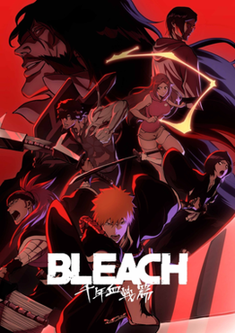
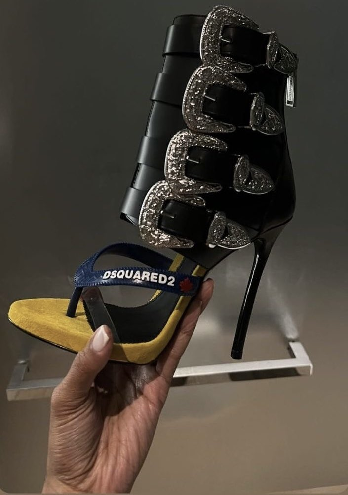

My Most Anticipated Animes This Fall Season 2024
October 7, 2024 by Jelena Smith

The first on my list is Bleach: Thousand-Year Blood War Arc Cour 3 of 4. This arc is the climax of the Soul Reapers' battle against the Quincies, who seem to be winning the war. However, Ichigo Kurosaki, with his unwavering resolve, stands at the forefront of this struggle. Aizen’s cunning plays a critical role as he manipulates events from the shadows, while Uryu Ishida grapples with his identity and the loyalty to his friends and his Quincy heritage. The dynamic between Ukitake and Kyoraku showcases the depth of friendship and sacrifice in this pivotal moment, as they face formidable Quincy opponents like Yhwach and his elite guards.
Next on my watchlist is Dan Da Dan, which dives deep into paranormal phenomena, including aliens, spirits, and kaijus. This show promises to blend action with thrilling supernatural elements that keep viewers on the edge of their seats.
Following that, we have Tower of God Season 2 Part 2. I’m hoping the animation quality will significantly improve this season, as the story continues to unfold in intricate ways.
Lastly, Blue Lock Season 2 captures my interest with its unique take on soccer, blending competitive spirit with intense character development. I can't wait to see how the teams evolve and face their challenges, paralleling the high stakes of Tower of God.
What I'm Loving Right Now in Fashion
October 7, 2024 by Jelena Smith

Right now, my heart is racing for the latest fashion trends that scream personality and flair! First up, I am absolutely obsessed with bubble skirts. These playful, voluminous pieces add a whimsical touch to any outfit, making me feel like I just stepped out of a fashion fairytale.
Then there are the mini styles that are taking over my wardrobe! Whether it’s a cute mini dress or a flirty mini skirt, I can't get enough of these fun and daring lengths that celebrate legs! Pair them with some over-the-top shoes—think bold colors, funky shapes, and dramatic heels—and you've got an outfit that truly makes a statement.
And let’s not forget the cheetah print—a timeless classic that I love to incorporate into my outfits for that fierce edge! Whether it's a chic cheetah print top or a bold pair of pants, this print adds a wild twist that keeps things exciting.
Accessories? I'm all about those over-the-top bags and shoes that are not just functional but also fabulous! From glittery handbags to sky-high platform heels, it’s all about expressing yourself through vibrant and eye-catching pieces.
Speaking of vibrancy, I can't get enough of Chrome Hearts. Their unique, edgy designs and signature aesthetic resonate with my love for fashion that pushes boundaries. Incorporating a piece or two into my outfits adds an exclusive vibe that I can't resist.
In a nutshell, my fashion game right now is all about making bold choices, mixing fun textures, and embracing color in every possible way! Fashion is supposed to be fun, so let your style shine bright and don’t be afraid to turn heads!